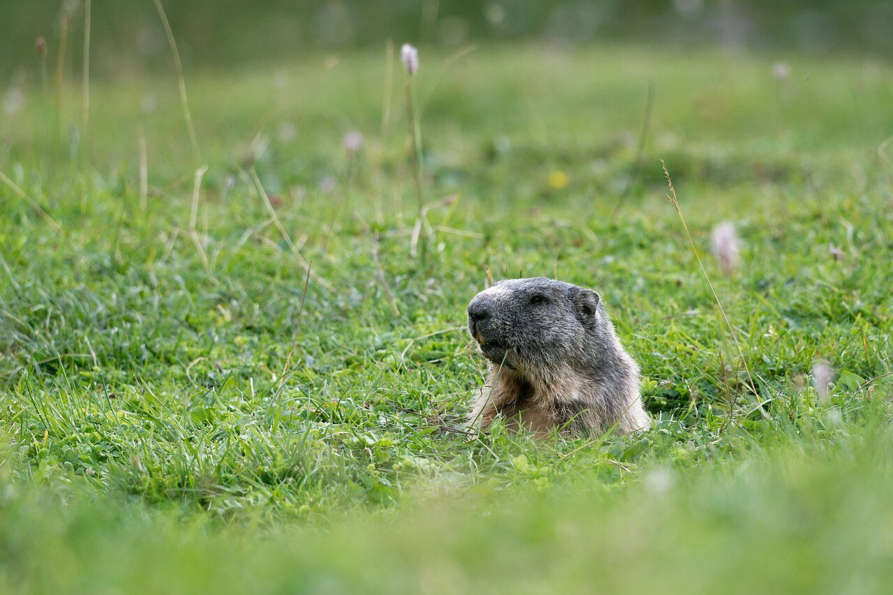
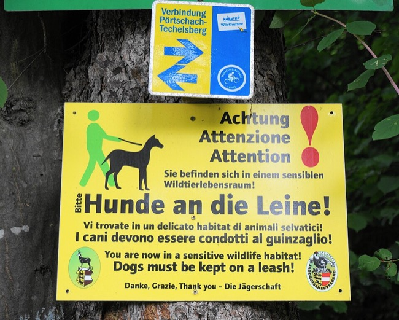

Chamois and deer in snow
Fleeing through snow takes up to 60 times the energy of moving normally. Chased again and again, animals can die of exhaustion.

← Back to Safety LibraryMarmots, chamois and nesting birds: keeping your dog from chasing.
Alpine animals live on tight energy budgets. Every time they run from a dog, they spend some of it.
Fleeing through snow takes up to 60 times the energy of moving normally. Chased again and again, animals can die of exhaustion.
Many young are born in May and June and hide on the ground. Capercaillie, black grouse and ptarmigan nest on the ground too, and a disturbed hen can abandon her brood.
Marmots have only a few weeks to fatten up. Time spent hiding from dogs is time not eating, and young marmots may not survive the winter.

A hunters’ sign on a path in Carinthia, Austria, in German, Italian and English.
Every dog has a hunting instinct. Plan for it rather than hoping for good recall.
Brown bears live in Trentino. A loose dog can find a bear and run back to you with the bear behind it, so keep it on the lead. If you see a bear, stay calm and move away slowly. Never run and never follow it. Call 112 afterwards.
The provincial hunting law protects wildlife from dogs. Working hunting, herding, rescue and guide dogs are exempt.
References checked 18 November 2026: Canton of Fribourg wildlife disturbance page (energy cost of fleeing in snow, leads, young animals); Natur & Freizeit “Schneesport mit Rücksicht” rules, supported by the Swiss Federal Office for the Environment; Swiss Ornithological Institute on disturbance of grouse; Bavarian Environment Agency grouse factsheet; German Alpine Club on black grouse; South Tyrol Hunters’ Association interview in Südtirol Online, 4 May 2025 (fawns, marmots); South Tyrol hunting law L.P. 14/1987, art. 35, with fines under L.P. 9/2000, art. 16; Autonomous Province of Trento large carnivore office and press releases of 4 April 2025 and 8 August 2026 on bears and dogs. Local signs and rules override this summary.
Photos: marmot at Cianpo de Crósc, Cortina d’Ampezzo, Marie-Lan Taÿ Pamart, CC BY 4.0 (Wikimedia Commons); hunters’ sign in Carinthia, Naturpuur, CC BY-SA 4.0, resized (Wikimedia Commons).
This is general information, not a diagnosis or a substitute for veterinary care. It is not legal advice either.